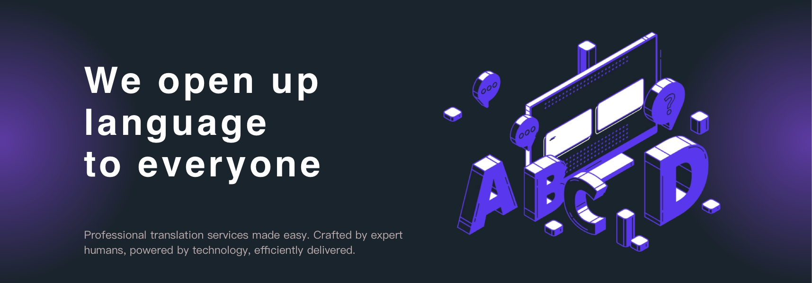

Local-trans, as a professional language service brand, is committed to providing high-quality translation, interpretation, desktop publishing, software localization, multimedia translation, AI data annotation and other language related services for enterprises and individuals in the fields of medicine and medical treatment, manufacturing, finance (digital currency), film and television, law, software, games and other fields.
With Local-trans' continuous accumulation, we have more than 500+ certified translators from almost all countries and regions in the world, providing services for more than 100 languages.
As a language provider in China, the following are the language combinations that we are most professional with:
Source language: English/Chinese
Target language: Chinese(traditional)/Japanese/Korean/Indonesian/ Thai/Vietnamese/Hindi/Arabic/German/French/Italy/Spanish, etc.
Joanne Wan
Global Language Manager
Manage Multilingual Translation
Recruit translators around the world
Local-trans Translation provides translation services in over 100 languages, and we have experienced certified interpretors in almost all countries and regions around the world.
Translation is usually required for all kinds of documents and other materials. Accurate and authentic translation and high-quality and beautiful desktop publishing is a good guarantee for your business expansion.
Interpretation has higher requirements for immediacy and accuracy. Interpretors should have profound translation skills, and sufficient practical experience as well.
Local-trans Translation can provide multimedia-related language services such as listening interpretation and recording, subtitle translation, subtitling, audio recording, narration, etc.
We provide all kinds of software localization services, such as website, game, APP, etc., to facilitate you quickly adapt to the target market and connect with your audience.
We will mobilize the best resources to ensure that our VIP customers can enjoy the most timely and the most considerate customer service with the highest quality.